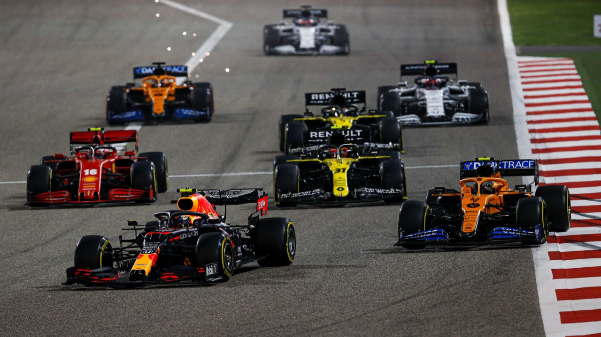
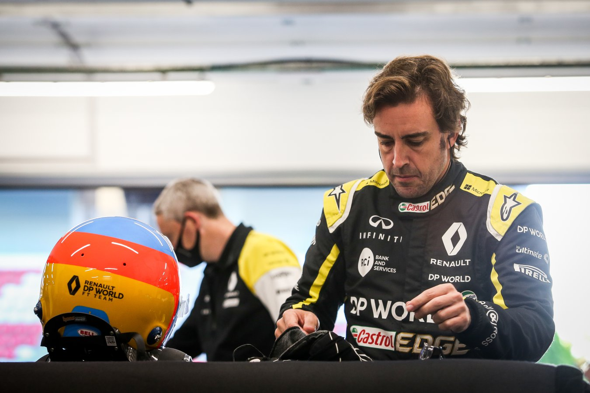
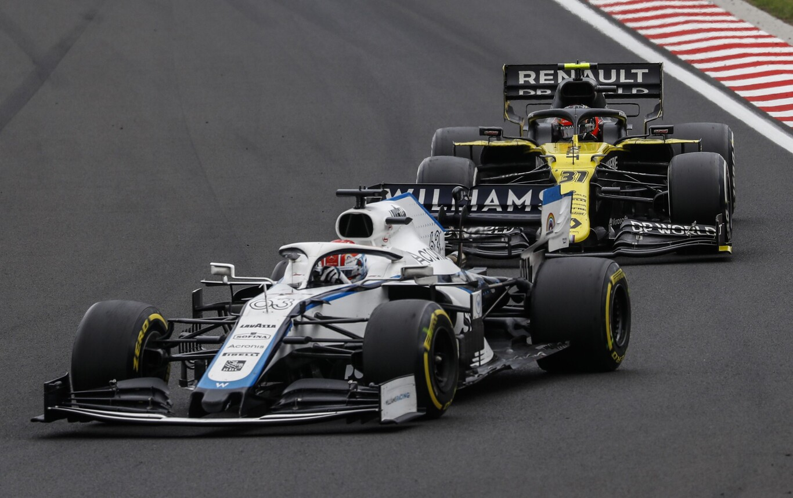

Notícias
La F1 baraja empezar la temporada con doble GP en Baréin
Pilotos que se fueron y volvieron a la F1
Renault negocia con Williams para convertirlo en el equipo satélite de Alpine dentro de la Fórmula 1
Qué es DAZN y cuál es la forma más barata de ver la Fórmula 1 en 2021 tras su acuerdo con Movistar+